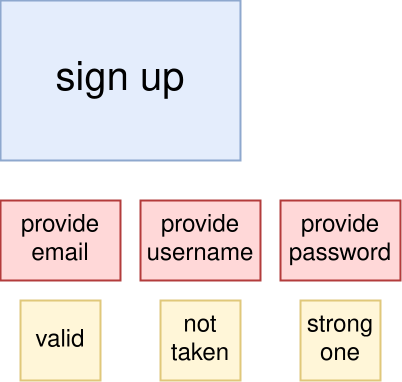

user story mapping
Gergő Pintér, PhD
gergo.pinter@uni-corvinus.hu
the problem
- the backlog difficult to prioritize
- because it’s a list
- difficult to identify dependencies
- it quickly becomes a network
- already at this point the tasks need detailed understanding
- the backlog is one dimensional
- which is priority
user story mapping
- popularized by Jeff Patton
- original blog post
- User Story Mapping, O’Reilly, 2014, ISBN-13: 978-1491904909
- performed in workshops including
- users,
- (UI) designers,
- developers,
- testers,
- and other stakeholders
- build a shared understanding of the product and a common language
other benefits of USM
- helps to understand and prioritise what the user needs
- it can discussed with the customer / users → feedback
- highlights assumptions and risks that might be missed by a single viewpoint
- uncovering dependencies earlier and faster with multiple viewpoints
user story map
- two dimensional
- uses the user’s perspective to tell a story / narrative
- the user want to achieve a goal
- which consists of one or many activities

user story map

activity
- is sort of a big thing that people do
- that can have multiple steps,
- and doesn’t always have a precise workflow
activities are still user stories with roles
As a social media platform user
I want to follow users
so I can keep up with their posts.user task
- in agile a “task” refers to the things that developers do
- to finish user stories
- user story mapping considers the user,
- so a user task is what a user needs to do to complete an activity
- for example (follow a user)
-
- search for a user
- add user to the followed list
user story map as a document
- not final, not set in stone
- it is possible and encouraged to adjust
as the more knowledge is acquired about the software- versioning
- you are free to move notes up and down
- change the role (activity ↔︎ user task)
backbone, skeleton, ribs

top-down structure, high-level overview first, then adding details
iterations

note that
- there can be several different types of user
- each one could have a different reason for their activities
story mapping steps
- set the context, decide on the goal
- who is the user we are mapping for?
- what are they trying to achieve with their activity and why?
- what is the outcome they seek and how will we help them to achieve it?
- tell a story
- go wide not deep, details come later
- focus on the narrative flow
- create the backbone of steps
- define user tasks for each step
based on the Quickstart Guide to User Story Mapping
story mapping steps
- set the context, decide on the goal
- tell a story
- create the backbone of steps
- activities as a collection of things you do to get the goal done
- things that get your activity done are steps
- start your steps with a verb, an action
- the order of steps may differ by users, think of an ideal sequence
- discuss different use cases as they come up
- define user tasks for each step
- they can include sub-tasks, alternative tasks, exceptions, details and even UX notes
- if a step has many tasks, is may worth to split into separate steps
based on the Quickstart Guide to User Story Mapping
social media platform example – user management

user management features from a social media platform v2
social media platform example – create content

create content feature from a social media platform v2
social media platform - example

user story mapping mistakes


more from Jeff Patton: 5 story mapping mistakes
social media platform example – sign-up

sign-up feature from a minimal social media platform